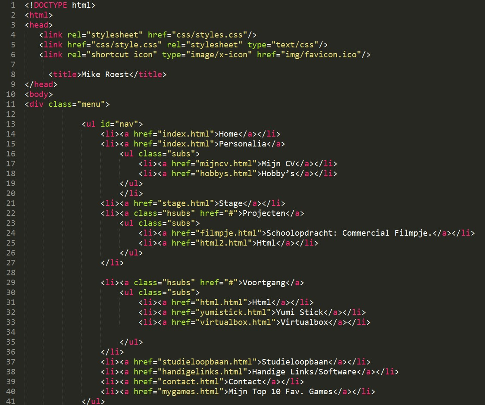
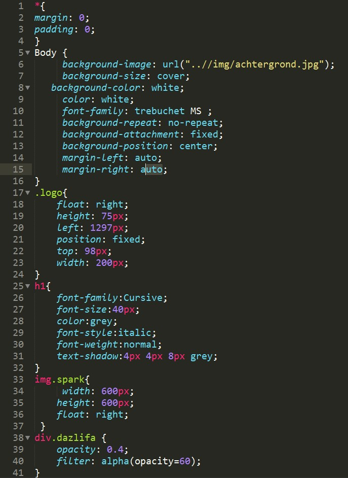
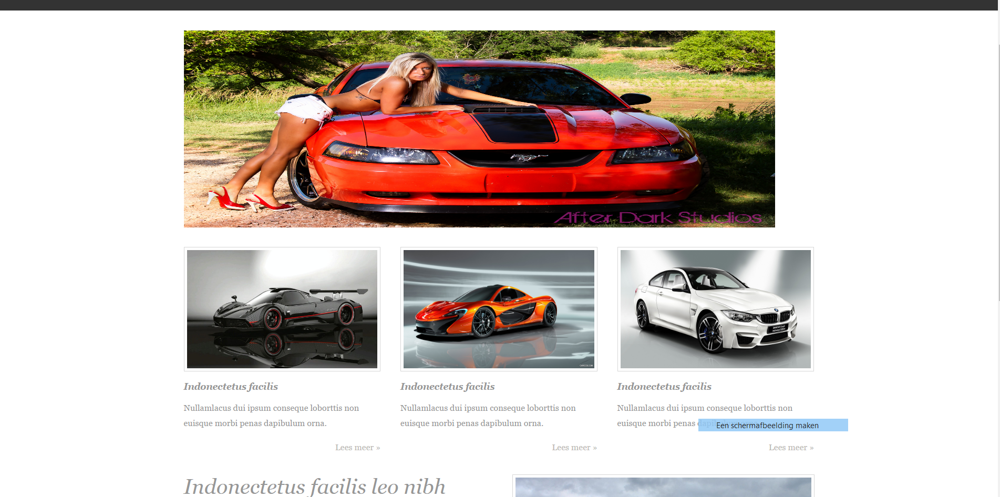

De taal waar je een website in schrijft heet HTML.
Ik schrijf mijn HTML codes in het programma Sublime Text.

De HTML code die ik hier heb geschreven in Sublime koppel ik weer aan een CSS code.
CSS is een code taal waarmee je de opmaak regelt, zoals een achtergrond op je website,
de tekst kleur of de lettertype.
Hieronder een voorbeeld.

En als dat eenmaal klaar is heeft u een mooi resultaat.
Zoals u hier onder ziet.

|